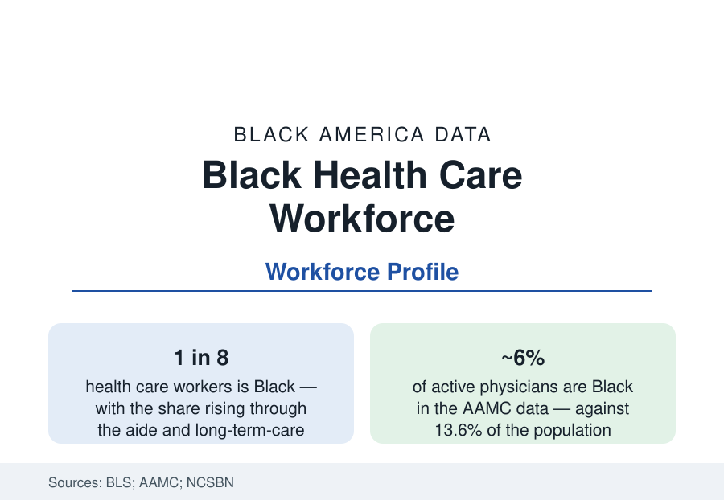

Black Public Health
Black Health Care Workers: The Workforce That Carries the System
Black workers are about one in eight of the health care workforce — concentrated in its aide and support ranks and thinnest among physicians. The workforce data.

Health care is the largest employment system in America, and Black workers carry a disproportionate share of its hands-on labor: roughly one in eight health care workers is Black, with the share climbing toward one in four among nursing assistants, home health aides, and the long-term-care workforce, and falling to about six percent of physicians. The gradient — care delivered by Black hands, directed by a profession that remains largely non-Black — is the health system's own structural datum, and it conditions everything from patient trust research to the outcomes literature. This article reports the health workforce data.
The Pyramid: Aides, Technicians, Nurses, Physicians
The BLS and licensing data draw the tiers precisely. At the base, the direct-care workforce (nursing assistants, home health and personal care aides, phlebotomists, medical assistants) records Black shares from the high teens to around a quarter, at the industry's lowest wages — the long-term-care workforce profile echoes the employment section's care-economy file. The licensed middle — licensed practical nurses (Black shares in the mid-teens), registered nurses (roughly one in ten in the NCSBN workforce survey, rising among younger cohorts), respiratory and radiologic technologists, pharmacists (high single digits) — forms the system's professional mass. The apex records the thinnest numbers: active physicians about five to six percent Black in the AAMC data (with Black men a famously stagnant subset — the analyses noting fewer Black male medical matriculants in recent years than in the late 1970s are a staple of the literature), dentists around four percent, and the specialist and academic-medicine ranks thinner still below the physician average. The pipeline counts (medical school matriculants in the range of eight to ten percent Black in recent AAMC classes, with attrition and debt data stratifying by the same variables) set the profession's near future.
Why the Workforce Data Are Health Data
The workforce composition is not an employment footnote; the outcomes literature treats it as a clinical variable. The concordance research — studies of patient-physician racial alignment — reports effects on preventive-service uptake, patient adherence and satisfaction, and, in its most cited finding, infant mortality (the 2020 study finding Black newborns' mortality penalty halved under Black physicians' care concentrated the field's attention). The mechanism literature points to communication, trust earned against documented historical reasons, and screening-offer rates. The system's operational response — the concordance argument for pipeline investment, the community health worker (CHW) expansion (a workforce drawn deliberately from served communities, Black shares high, now Medicaid-reimbursable in a growing list of states), and the doula workforce of the maternal profile — is in the program data. The reference files the workforce here, in the health section, because that is where its effects are measured.
Institutions: The Black Health Professions Ecosystem
The professions' own institutions structure the file: the National Medical Association (founded 1895, the Black physicians' parallel body), the National Black Nurses Association, the historically Black health-professions schools (Meharry, Morehouse School of Medicine, Howard's and Xavier's pharmacy and medical programs — whose graduates supply a disproportionate share of Black practitioners; Xavier alone is famous in the data for its pre-med production), and the Black hospital heritage (a closed chapter since the hospital-integration era dissolved the Black hospital system — Provident of Chicago the first, hundreds at the peak — a loss the institutional literature still audits). The current hospital data record where the workforce works: safety-net and public hospitals employ Black professionals at the highest shares, the academic flagships at rising but thinner ones, and the ownership tier (Black-owned practices, clinics, and the surviving Black hospitals — a handful, Howard University Hospital chief among them) is the business fraction of the file.
Exposure and the Workforce's Own Health
The workforce's own health data close the loop back to this section's subject. Direct-care workers record among the highest occupational injury rates in the BLS data (patient-handling injuries), the pandemic's mortality and infection toll on health workers fell disproportionately on the aide workforce this profile describes, and the wages-and-benefits tables (the aide workforce's own uninsurance and Medicaid enrollment rates — the people delivering care qualifying for public coverage themselves) are the file's standing irony in hard numbers. The burnout and retention series of the post-pandemic years stratify the same way: the tiers with the most Black workers record the deepest shortages and the fastest exits, which the staffing data translate directly into the access data of the safety-net institutions.
Reading the Workforce Data
The health care system's Black workforce profile explains, in one table, why the trust and access files read as they do: the people America sends into its most intimate professional encounters are disproportionately Black at the bedside and barely Black at the diagnosis. Every pipeline statistic in this article is therefore a health statistic — the AAMC's matriculant table is as much a public health document as any registry in the section.
More in Black Public Health
Hypertension Among Black Adults: Prevalence, Control, and Consequences
About 55 percent of Black adults have hypertension — the highest rate of any U.S. group. Prevalence, onset, control, and the stroke, heart, and kidney consequences in the data.
Diabetes Among Black Adults: Prevalence and Complications
Nearly one in five Black adults has diabetes, diagnosed or undiagnosed — and its complications fall with particular weight. The CDC data on prevalence, control, and outcomes.
Black Life Expectancy: The Gap at Birth and Its Causes
Black life expectancy at birth is about 73 years, roughly five years below the national figure — the summary measure of every health gap in this section. The CDC data.
Source: U.S. Bureau of Labor Statistics; Association of American Medical Colleges diversity data; National Council of State Boards of Nursing; HRSA health workforce data.